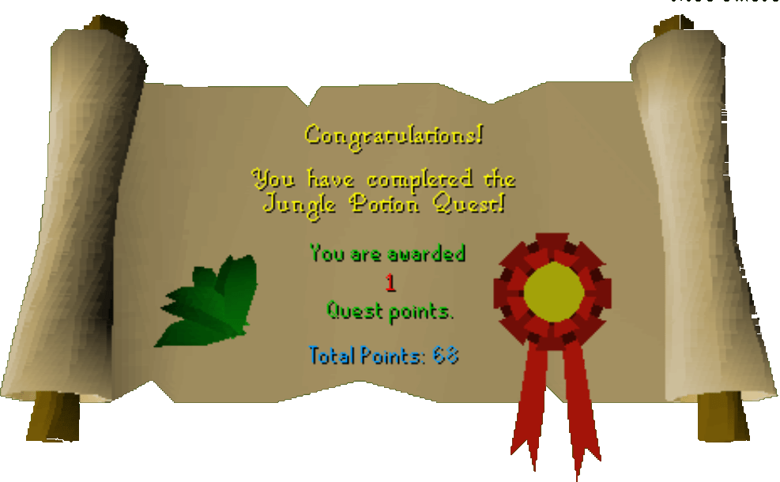

Jungle Potion
Description: Trufitus Shakaya of the Tai Bwo Wannai Village requires that you collect five special jungle herbs for a potion so he can commune with his Gods.Difficulty: Intermediate
Length: Short
Required Quests:
- Druidic Ritual
Items & Skills Needed:
- None
Recommended:
- Weapon and armor to run past Jogres (level 48)
Reward: 1 Quest point, 775 Herblore XP
Instructions:
If you haven't already, consider buying an Antipoison potion from the nearby general store, Jiminua's Jungle Store., for 432 gold.
Talk to Trifitus about what he needs. He will tell you to go find an herb called Snake Weed. Head southwest through the village and cross the muddy land bridge. Go slightly west, look for a marshy jungle vine, and search it. Then, identify the herb. Go back to Trifitus.
The next herb he sends you after is called Ardrigal. Go northeast past the cliffs and follow the shore until you reach a small peninsula with palm trees. Search one of them to find and identify the herb. Head back to Trifitus.
The next herb is Sito Foil. Trifitus sends you south to where there's an ever-burning fire. Go around the semi-enclosed building and search the scorched earth just south of it. Obtain and identify the herb, then return.
The second-to-last herb is called Vocenia Moss. Head southeast to a small pile of rocks that is hard to miss. Search one of the plain rocks and id the moss. Go back for your final task.
The final herb is called Rogue's Purse. Of course the last is the hardest so make sure you have some armor and possibly food, then head north. You should see the entrance to a dungeon atop some cliffs. Head east around the cliffs, then back west and up until you reach the cave entrance.
Once you're inside, run past the Jogres or fight them as you head toward the southeast passage. Look for the fungus covered wall. Search it and identify the Rogue's Purse. Head back to Trifitus for the fifth and final time.
Once you return, Trifitus will thank you, reward you, and train you in Herblore. (Congratulations)
Congratulations, Quest Complete!

This quest guide was written on RuneHQ by Gnat88.
This quest guide was entered into the database on Tue, Mar 02, 2004, at 10:16:05 PM by Weezy and was last updated on Wed, Mar 31, 2004, at 05:19:02 PM.